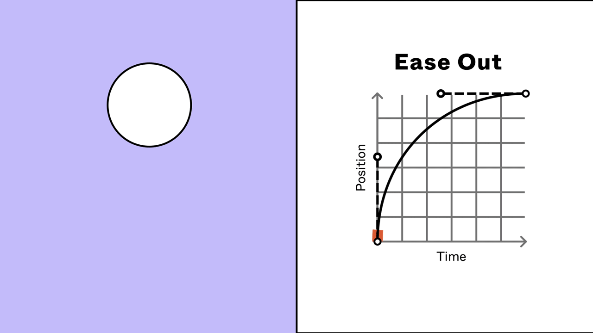
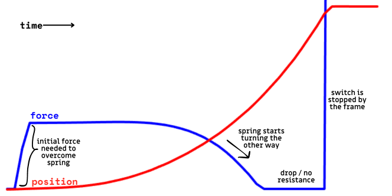
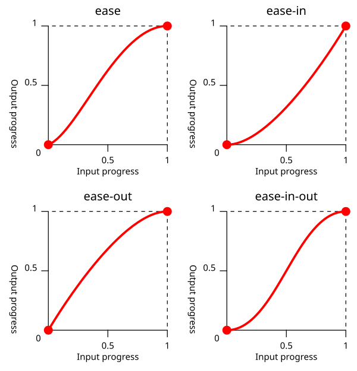
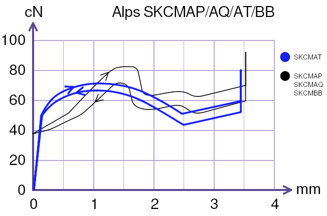
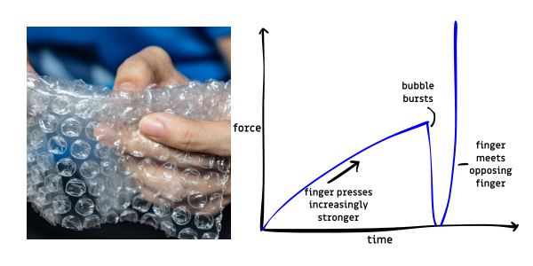
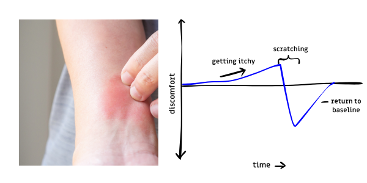
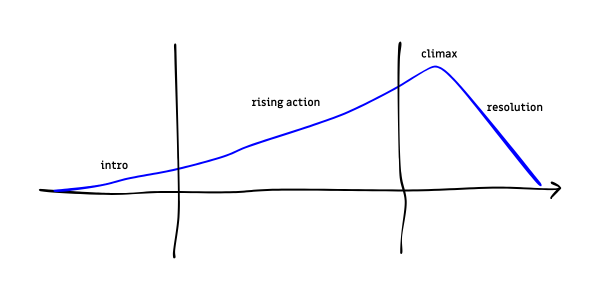

Before anything, let me present you with a set of controls with no context.
Stop using ease-out, or ease-in-out, or whatever-out, in every UI animation!
There is a lot of propaganda on the internet against ease-in, saying that it's “unnatural”, “unusual”, or that it's “of the devil”. Some say that it's both “sluggish” and “abrupt”. Many pointing to ease-out as the safe, smooth, satisfying messiah of animation (including its safer kin, ease-in-out). There are even published ‘best practices’ which can be summed up to “just use ease-out”. This post is here to set things straight—in a nonlinear fashion.
So, why not ease-out? And what to use instead?
Reason #1. It’s overused
Let’s get the weakest point out of the way. Ease out is boring because it’s everywhere. Because it’s part of the browser default ease function (which is a combination of a fast ease-in with a slow ease-out).
It’s like how corners are getting rounder and rounder on the web simply because it's easy and built-in.

Source: Figma
Is the public missing out on better web animations (and better corners) because of the ubiquity of these practices? Yes.
Reason #2. It’s unrealistic
How about a study in skeuomorphism?
Imagine a mechanical toggle switch. Something like the following video:
Now here’s an interactive physics simulation of the same spring-based toggle switch:
Drag your pointer horizontally and vertically across the simulation window to control the appendage that toggles the switch.
This is a physics-based simulation with simulated forces, torques, and constraints. Let’s slow the simulation down and show some force lines for a better look.
Graphing the angular position of the switch and the reaction force that resists your press (i.e. the normal force) over time in real time, gives us…
Play around with the simulation!
Here’s what a typical motion looks like:

Typical output graph of the above simulation
Notice the position curve (red). We'll get to the force curve later.Does the position curve look anything familiar? Compare that with some standard easing functions:

Common easing functions. Source: MDN
The toggle switch’s position curve follows the ease-in curve! A slow start, gradually building up momentum, then finally stopping to a satisfying ‘click’!
Contrary to “best practice”, the natural motion of a toggle switch does not follow an ease-out nor an ease-in-out curve! I’ll go further and say that ease-out is unnatural for any kind of UI control that represents a tactile interaction.
Like buttons. In the real world, buttons (the ones that are nice to press anyway) have some kind of buckling mechanism when pressed. Similar to the toggle switch example above, there’s a buildup, a fall, and a final ‘click’ into place.
A button. In the real world.
Best practice says that the sharp stop is unnatural and should be avoided. But that well-defined resolution is part of what makes switches and buttons feel good. Just imagine a button that dampens the motion the more you press it. It’ll feel squishy and mushy. You know what else slows down the further you go? Ease-out!
And yet, thousands of UIs still use ease out for UI controls!
Ease out everywhere. One of these is a skeuomorphic rocker switch, ironically.
Has abstract UI design gone too far?
Counterexamples
Of course, not all UI animations need ease in, such as macro interactions, card movement, scrolling, expand/collapse, or any object that ‘animate themselves’ as opposed to raw manipulation.
Source: Material Design
Unlike switches and buttons, these things don’t have a frame or housing that can immediately stop them when they ‘bottom out’. So they have to decelerate naturally.
In the end, it depends. But as a general rule? Ease-in for tactile things.
Reason #3. Ease-in is more satisfying
The graph again. This time focus on the force curve.
If you’re a mechanical keyboard enthusiast, you might’ve recognised the general landmarks in the force curve (blue)above. That ‘tactile bump’ and subsequent drop in force is a big part of what provides the satisfying feedback that mechanical keys are known for (and coincidentally, produces the ease-in motion).

Force curve of a tactile keyboard switch. Source: deskthority.net
But why is it satisfying?
I present my sub-thesis:
The sequence of tension and release is intrinsically satisfying.
me
I will now present supporting evidence with xkcd-style graphs.
A. Popping bubble wraps
Disclaimer: We are getting into subjective and pseudoscience territory.

Estimated force curve of popping a bubble in a bubble wrap.
Popping bubble wraps is a satisfying sensation. Popping a bubble in a bubble wrap follows the familiar buildup, release, and resolution pattern that is associated with ease-in.
Relevant xkcd.
B. Scratching an itch

Estimated discomfort experienced during an itch’s lifetime.
While the act of scratching by itself is mildly pleasurable, when paired with an itchy skin, it becomes a satisfying experience.
C. Music theory
🚧 This section is WIP, something about dissonance and consonance 🚧
D. Arousal jag theory
The abrupt fall from elevated levels of arousal to a lower, more appropriate level is thought to produce a pleasurable response.
APA Dictionary of Psychology, ‘arousal jag’
This theory was introduced by a psychologist named Daniel E. Berlyne in 1970. The idea is that an increase in tension followed by a sharp decrease produces a satisfying feeling. This framework works well for ease-in’s case in the context of the force curve, or more directly, with ease-in’s initial slow buildup followed by its abrupt resolution.
If you’re looking for the psychology behind microinteractions, well, that’s one of them.
E. The Three-Act Structure

The three-act structure with a tension graph.
In storytelling or filmmaking, the three-act structure is a model for analysing or creating good stories. It mirrors the tension-resolution sequence in a grander scale. And with bigger scope comes the potential for a higher level of satisfaction—catharsis. Great stories that use the three-act structure always leave you in a state of catharsis.
Is it possible to have micro-catharses in UI animations?
All of these patterns of satisfaction reflect ease-in’s slow buildup and sudden resolution. While there are other kinds of satisfying phenomenon, like sand slicing which has nothing to do with any of this; tension and release is a way to induce the positive effect.
There must be a balance to the proportion of tension and release, else the negative effects of the tension may overcome the positive effects of release, or the tension too light that the release is too shallow. A bubble wrap that is really hard to pop would be quite annoying, and a grand story that ends prematurely would be disappointing. The easing curve must be manually finetuned depending on the purpose. For buttons and toggles, keep it shorter than a bubble wrap pop.
🫰 Snap! Try snapping your fingers. Did you do it? If so, you just made an ease-in motion. Don’t believe me? When people say they want snappy animations, what do they really want?
Tips
- Use a custom curve appropriate to the size of the element. Don’t use the default ease-in because it’s likely to feel too slow for most use cases. In CSS, there’s
cubic-bezier() for example.
- Use a duration appropriate to the curve, the size of the element, and the scale of the movement.
- Partially start the animation on pointer press, not on release.
- For mouse users, there’s already an initial ‘actuation force’ required to trigger the mouse button. In these cases, the initial velocity shouldn’t be zero (the easing curve shouldn’t start at a horizontal slope). For touchscreens, there’s no such actuation force.
Conclusion
Don’t use ease-out in everything! Try ease-in! Or try a combination of both with varying weights! Just try anything at all. Tweak your curves as often as you tweak your paddings.